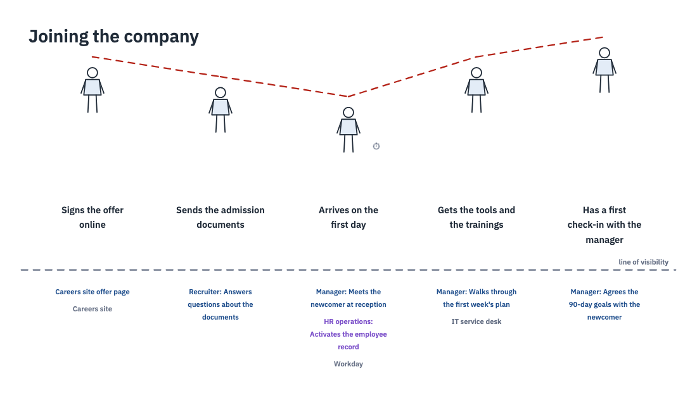
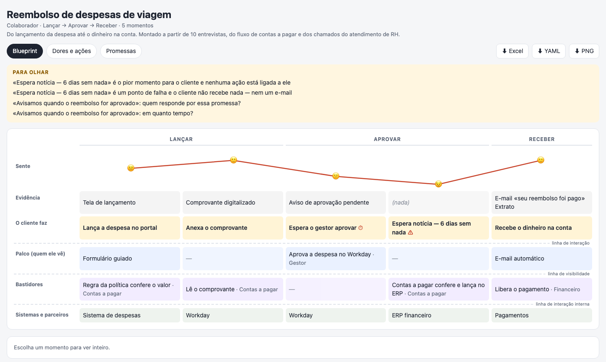
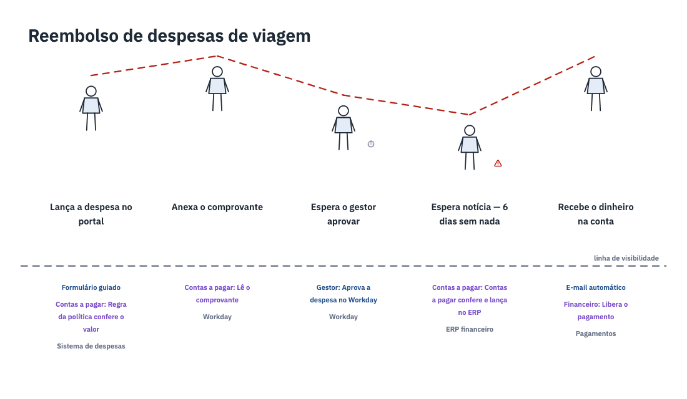

employee-onboardingJoining the company: two hours waiting for a laptop on the first day — with an action and an owner. MapExplainerWorkbook (.xlsx)File (.blueprint.yaml)front-of-house
Give Claude your interviews, tickets and process notes. Get a service blueprint: each moment the customer lives and how it feels — and who, on stage and behind, makes it happen. With the worst moment, and whether anyone owns it, in plain sight.

Examples — open a map, play an explainer, download the workbook

reembolso-despesasReembolso de despesas de viagem: seis dias sem notícia é o pior momento — e, de propósito, ninguém responde por ele ainda. Quatro coisas para olhar. MapExplainerWorkbook (.xlsx)File (.blueprint.yaml)